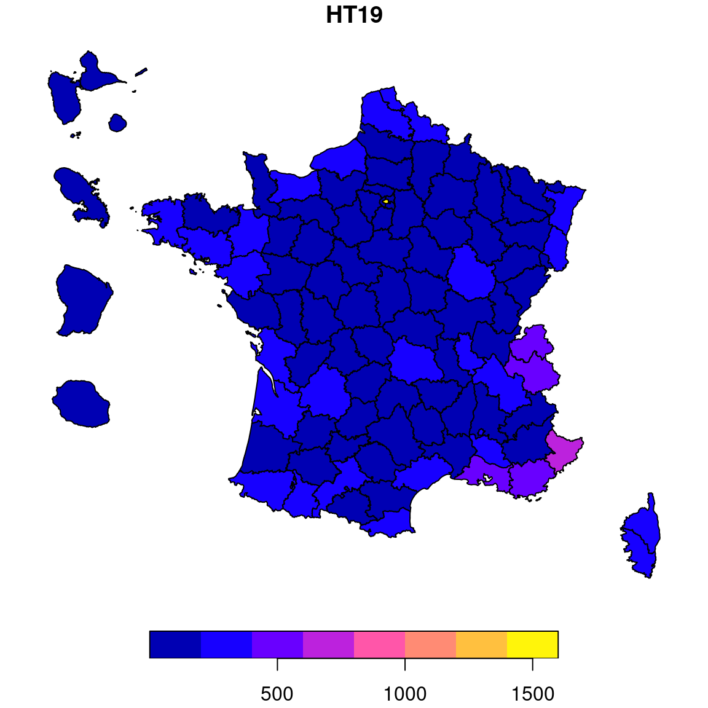

Chapitre 8 Nettoyer des données territoriales : gérer les évolutions du COG (code officiel géographique)
Lorsque qu’on démarre en analyse de données territoriales, on est parfois surpris de constater que ce qui nous semblent être immuable, comme les contours des régions, départements, communes, ne l’est pas ! Chaque année des communes fusionnent (voire se séparent !), les régions ont bougé avec beaucoup de bruit début 2016, on a même vu récemment une commune changer de département. Bref toute chaîne de traitement de données qui a vocation a être pérennisée doit prendre en compte cette variabilité des contours territoriaux.
Le COG ou Code officiel géographique des territoires est administré par l’INSEE, qui publie chaque année la nouvelle liste des communes, départements, regions, et une table de passage annuelle entre anciennes et nouvelles communes.
Comme souvent avec R, des utilisateurs soucieux de partager leurs astuces ont conçu des packages pour faciliter les traitement de mise à jour du COG, on peut citer {COGugaison} de Kim Antunez, qui est très précis (conversion d’un millésime à un autre, contrôle des années de conversion, retour en arrière possible) mais seulement adapté pour les tables de données France entière, et le package DREAL Pays de la Loire, initié par Maël Theulière {COGiter}, qui est plus simple (un seul sens : la mise à jour), ce package comprend par ailleurs des services d’agrégation à différentes échelles, de gestion des noms, des contours géo, mais ne gère pas très bien les scission de communes.
La mise à jour du COG d’une source avec ces packages n’est possible que si cette dernière est disponible au moins à la maille communale sans secrétisation.
Dans ce chapitre sont présentés les usages les plus fréquents de {COGiter}.
8.1 Mettre à jour une table comportant une colonne de code commune
Dans nos données relatives aux pesticides, la table des stations comprend le code commune de rattachement de chaque station.
{COGiter} permet de tenir à jour cette information d’une fonction :
library(COGiter)
stations_cog_ok <- passer_au_cog_a_jour(.data = station, code_commune = code_commune, aggrege = FALSE, garder_info_supra = TRUE)Le paramètre “aggrege” sert à indiquer si on souhaite obtenir en sortie une table avec une ligne par commune à jour, en sommant les valeurs numériques de la table. Le paramètre “garder_info_supra” sert à indiquer si on souhaite obtenir en sortie une table comportant en plus les territoires supra-communaux (EPCI, DEP, REG, …) de rattachement.
stations_cog_ok %>% names()## [1] "code_station" "libelle_station" "date_creation"
## [4] "source" "code_masse_eau" "code_entite_hydro"
## [7] "code_troncon_hydro" "DEPCOM" "NOM_DEPCOM"
## [10] "EPCI" "NOM_EPCI" "DEP"
## [13] "NOM_DEP" "REG" "NOM_REG"
## [16] "DEPARTEMENTS_DE_L_EPCI" "REGIONS_DE_L_EPCI"8.2 Mettre à jour le COG et agréger aux différentes échelles
Dans nos données de l’enquête tourisme, l’INSEE nous indique que les communes utilisées pour diffuser les résultats sont de celles 2019. Elles on donc bougé depuis.
Imaginions, que nous voudrions avoir les résultats de cette enquête non pas par commune, mais par EPCI et département : la fonction cogifier() nous aide à faire tout ça en un tour de main.
glimpse(enq_tourisme)## Rows: 34,953
## Columns: 55
## $ CODGEO <chr> "01001", "01002", "01004", "01005", "01006", "01007", "01008…
## $ LIBGEO <chr> "L'Abergement-Clémenciat", "L'Abergement-de-Varey", "Ambérie…
## $ REG <chr> "84", "84", "84", "84", "84", "84", "84", "84", "84", "84", …
## $ DEP <chr> "01", "01", "01", "01", "01", "01", "01", "01", "01", "01", …
## $ HT19 <dbl> 0, 0, 1, 2, 0, 0, 0, 0, 1, 0, 1, 0, 1, 0, 1, 0, 0, 1, 1, 0, …
## $ HT019 <dbl> 0, 0, 0, 1, 0, 0, 0, 0, 1, 0, 0, 0, 0, 0, 0, 0, 0, 0, 0, 0, …
## $ HT119 <dbl> 0, 0, 0, 0, 0, 0, 0, 0, 0, 0, 0, 0, 0, 0, 0, 0, 0, 0, 0, 0, …
## $ HT219 <dbl> 0, 0, 1, 0, 0, 0, 0, 0, 0, 0, 0, 0, 1, 0, 0, 0, 0, 1, 1, 0, …
## $ HT319 <dbl> 0, 0, 0, 1, 0, 0, 0, 0, 0, 0, 1, 0, 0, 0, 1, 0, 0, 0, 0, 0, …
## $ HT419 <dbl> 0, 0, 0, 0, 0, 0, 0, 0, 0, 0, 0, 0, 0, 0, 0, 0, 0, 0, 0, 0, …
## $ HT519 <dbl> 0, 0, 0, 0, 0, 0, 0, 0, 0, 0, 0, 0, 0, 0, 0, 0, 0, 0, 0, 0, …
## $ HTCH19 <dbl> 0, 0, 35, 17, 0, 0, 0, 0, 15, 0, 9, 0, 10, 0, 19, 0, 0, 43, …
## $ HTCH019 <dbl> 0, 0, 0, 8, 0, 0, 0, 0, 15, 0, 0, 0, 0, 0, 0, 0, 0, 0, 0, 0,…
## $ HTCH119 <dbl> 0, 0, 0, 0, 0, 0, 0, 0, 0, 0, 0, 0, 0, 0, 0, 0, 0, 0, 0, 0, …
## $ HTCH219 <dbl> 0, 0, 35, 0, 0, 0, 0, 0, 0, 0, 0, 0, 10, 0, 0, 0, 0, 43, 23,…
## $ HTCH319 <dbl> 0, 0, 0, 9, 0, 0, 0, 0, 0, 0, 9, 0, 0, 0, 19, 0, 0, 0, 0, 0,…
## $ HTCH419 <dbl> 0, 0, 0, 0, 0, 0, 0, 0, 0, 0, 0, 0, 0, 0, 0, 0, 0, 0, 0, 0, …
## $ HTCH519 <dbl> 0, 0, 0, 0, 0, 0, 0, 0, 0, 0, 0, 0, 0, 0, 0, 0, 0, 0, 0, 0, …
## $ CPG19 <dbl> 0, 0, 0, 1, 0, 0, 0, 0, 0, 0, 0, 0, 0, 0, 0, 0, 0, 1, 1, 0, …
## $ CPG019 <dbl> 0, 0, 0, 0, 0, 0, 0, 0, 0, 0, 0, 0, 0, 0, 0, 0, 0, 0, 0, 0, …
## $ CPG119 <dbl> 0, 0, 0, 0, 0, 0, 0, 0, 0, 0, 0, 0, 0, 0, 0, 0, 0, 0, 0, 0, …
## $ CPG219 <dbl> 0, 0, 0, 1, 0, 0, 0, 0, 0, 0, 0, 0, 0, 0, 0, 0, 0, 1, 0, 0, …
## $ CPG319 <dbl> 0, 0, 0, 0, 0, 0, 0, 0, 0, 0, 0, 0, 0, 0, 0, 0, 0, 0, 1, 0, …
## $ CPG419 <dbl> 0, 0, 0, 0, 0, 0, 0, 0, 0, 0, 0, 0, 0, 0, 0, 0, 0, 0, 0, 0, …
## $ CPG519 <dbl> 0, 0, 0, 0, 0, 0, 0, 0, 0, 0, 0, 0, 0, 0, 0, 0, 0, 0, 0, 0, …
## $ CPGE19 <dbl> 0, 0, 0, 72, 0, 0, 0, 0, 0, 0, 0, 0, 0, 0, 0, 0, 0, 121, 56,…
## $ CPGE019 <dbl> 0, 0, 0, 0, 0, 0, 0, 0, 0, 0, 0, 0, 0, 0, 0, 0, 0, 0, 0, 0, …
## $ CPGE119 <dbl> 0, 0, 0, 0, 0, 0, 0, 0, 0, 0, 0, 0, 0, 0, 0, 0, 0, 0, 0, 0, …
## $ CPGE219 <dbl> 0, 0, 0, 72, 0, 0, 0, 0, 0, 0, 0, 0, 0, 0, 0, 0, 0, 121, 0, …
## $ CPGE319 <dbl> 0, 0, 0, 0, 0, 0, 0, 0, 0, 0, 0, 0, 0, 0, 0, 0, 0, 0, 56, 0,…
## $ CPGE419 <dbl> 0, 0, 0, 0, 0, 0, 0, 0, 0, 0, 0, 0, 0, 0, 0, 0, 0, 0, 0, 0, …
## $ CPGE519 <dbl> 0, 0, 0, 0, 0, 0, 0, 0, 0, 0, 0, 0, 0, 0, 0, 0, 0, 0, 0, 0, …
## $ CPGEL19 <dbl> 0, 0, 0, 38, 0, 0, 0, 0, 0, 0, 0, 0, 0, 0, 0, 0, 0, 20, 0, 0…
## $ CPGEL019 <dbl> 0, 0, 0, 0, 0, 0, 0, 0, 0, 0, 0, 0, 0, 0, 0, 0, 0, 0, 0, 0, …
## $ CPGEL119 <dbl> 0, 0, 0, 0, 0, 0, 0, 0, 0, 0, 0, 0, 0, 0, 0, 0, 0, 0, 0, 0, …
## $ CPGEL219 <dbl> 0, 0, 0, 38, 0, 0, 0, 0, 0, 0, 0, 0, 0, 0, 0, 0, 0, 20, 0, 0…
## $ CPGEL319 <dbl> 0, 0, 0, 0, 0, 0, 0, 0, 0, 0, 0, 0, 0, 0, 0, 0, 0, 0, 0, 0, …
## $ CPGEL419 <dbl> 0, 0, 0, 0, 0, 0, 0, 0, 0, 0, 0, 0, 0, 0, 0, 0, 0, 0, 0, 0, …
## $ CPGEL519 <dbl> 0, 0, 0, 0, 0, 0, 0, 0, 0, 0, 0, 0, 0, 0, 0, 0, 0, 0, 0, 0, …
## $ CPGEO19 <dbl> 0, 0, 0, 34, 0, 0, 0, 0, 0, 0, 0, 0, 0, 0, 0, 0, 0, 101, 56,…
## $ CPGEO019 <dbl> 0, 0, 0, 0, 0, 0, 0, 0, 0, 0, 0, 0, 0, 0, 0, 0, 0, 0, 0, 0, …
## $ CPGEO119 <dbl> 0, 0, 0, 0, 0, 0, 0, 0, 0, 0, 0, 0, 0, 0, 0, 0, 0, 0, 0, 0, …
## $ CPGEO219 <dbl> 0, 0, 0, 34, 0, 0, 0, 0, 0, 0, 0, 0, 0, 0, 0, 0, 0, 101, 0, …
## $ CPGEO319 <dbl> 0, 0, 0, 0, 0, 0, 0, 0, 0, 0, 0, 0, 0, 0, 0, 0, 0, 0, 56, 0,…
## $ CPGEO419 <dbl> 0, 0, 0, 0, 0, 0, 0, 0, 0, 0, 0, 0, 0, 0, 0, 0, 0, 0, 0, 0, …
## $ CPGEO519 <dbl> 0, 0, 0, 0, 0, 0, 0, 0, 0, 0, 0, 0, 0, 0, 0, 0, 0, 0, 0, 0, …
## $ VV19 <dbl> 0, 0, 0, 0, 0, 0, 0, 0, 0, 0, 0, 0, 0, 0, 0, 0, 0, 0, 0, 0, …
## $ VVUH19 <dbl> 0, 0, 0, 0, 0, 0, 0, 0, 0, 0, 0, 0, 0, 0, 0, 0, 0, 0, 0, 0, …
## $ VVLIT19 <dbl> 0, 0, 0, 0, 0, 0, 0, 0, 0, 0, 0, 0, 0, 0, 0, 0, 0, 0, 0, 0, …
## $ RT19 <dbl> 0, 0, 1, 0, 0, 0, 0, 0, 0, 0, 0, 0, 0, 0, 0, 0, 0, 0, 0, 0, …
## $ RTUH19 <dbl> 0, 0, 16, 0, 0, 0, 0, 0, 0, 0, 0, 0, 0, 0, 0, 0, 0, 0, 0, 0,…
## $ RTLIT19 <dbl> 0, 0, 16, 0, 0, 0, 0, 0, 0, 0, 0, 0, 0, 0, 0, 0, 0, 0, 0, 0,…
## $ AJCS19 <dbl> 0, 0, 0, 0, 0, 0, 0, 0, 0, 0, 0, 0, 0, 0, 0, 0, 0, 0, 0, 0, …
## $ AJCSUH19 <dbl> 0, 0, 0, 0, 0, 0, 0, 0, 0, 0, 0, 0, 0, 0, 0, 0, 0, 0, 0, 0, …
## $ AJCSLIT19 <dbl> 0, 0, 0, 0, 0, 0, 0, 0, 0, 0, 0, 0, 0, 0, 0, 0, 0, 0, 0, 0, …enq_tourisme_epci_dep <- enq_tourisme %>%
# on enlève les colonnes textes à mettre à jour
select(-LIBGEO, -REG, -DEP) %>%
cogifier(code_commune = CODGEO, communes = FALSE, epci = TRUE, departements = TRUE, regions = FALSE,
metro = TRUE, franceprovince = FALSE, metrodrom = FALSE, drom = TRUE, na.rm = FALSE)
glimpse(enq_tourisme_epci_dep)## Rows: 1,352
## Columns: 54
## $ TypeZone <fct> Epci, Epci, Epci, Epci, Epci, Epci, Epci, Epci, Epci, Epci, …
## $ Zone <fct> "CC Faucigny-Glières", "CC du Pays de Pontchâteau St-Gildas-…
## $ CodeZone <fct> 200000172, 200000438, 200000545, 200000628, 200000800, 20000…
## $ HT19 <dbl> 6, 5, 3, 11, 8, 1, 6, 9, 5, 2, 76, 6, 6, 4, 2, 1, 15, 15, 20…
## $ HT019 <dbl> 2, 2, 0, 2, 4, 1, 3, 2, 0, 1, 14, 4, 4, 0, 1, 1, 7, 5, 5, 2,…
## $ HT119 <dbl> 0, 0, 0, 1, 1, 0, 0, 0, 1, 0, 3, 0, 0, 0, 0, 0, 1, 0, 0, 0, …
## $ HT219 <dbl> 4, 1, 2, 6, 2, 0, 2, 2, 1, 0, 14, 0, 1, 2, 1, 0, 1, 10, 3, 0…
## $ HT319 <dbl> 0, 1, 1, 2, 1, 0, 1, 4, 0, 1, 27, 2, 1, 2, 0, 0, 6, 0, 9, 0,…
## $ HT419 <dbl> 0, 0, 0, 0, 0, 0, 0, 0, 3, 0, 15, 0, 0, 0, 0, 0, 0, 0, 3, 0,…
## $ HT519 <dbl> 0, 1, 0, 0, 0, 0, 0, 1, 0, 0, 3, 0, 0, 0, 0, 0, 0, 0, 0, 0, …
## $ HTCH19 <dbl> 77, 92, 121, 330, 138, 8, 68, 219, 184, 24, 2414, 102, 89, 1…
## $ HTCH019 <dbl> 16, 29, 0, 60, 46, 8, 21, 17, 0, 6, 250, 50, 47, 0, 7, 10, 1…
## $ HTCH119 <dbl> 0, 0, 0, 61, 17, 0, 0, 0, 7, 0, 84, 0, 0, 0, 0, 0, 59, 0, 0,…
## $ HTCH219 <dbl> 61, 11, 98, 146, 60, 0, 28, 28, 15, 0, 417, 0, 14, 32, 6, 0,…
## $ HTCH319 <dbl> 0, 16, 23, 63, 15, 0, 19, 59, 0, 18, 994, 52, 28, 82, 0, 0, …
## $ HTCH419 <dbl> 0, 0, 0, 0, 0, 0, 0, 0, 162, 0, 538, 0, 0, 0, 0, 0, 0, 0, 11…
## $ HTCH519 <dbl> 0, 36, 0, 0, 0, 0, 0, 115, 0, 0, 131, 0, 0, 0, 0, 0, 0, 0, 0…
## $ CPG19 <dbl> 2, 7, 1, 5, 1, 0, 6, 11, 3, 1, 9, 2, 10, 4, 2, 0, 2, 5, 0, 1…
## $ CPG019 <dbl> 1, 3, 0, 1, 0, 0, 3, 2, 1, 1, 2, 1, 2, 3, 0, 0, 0, 3, 0, 0, …
## $ CPG119 <dbl> 0, 0, 0, 0, 0, 0, 0, 1, 0, 0, 0, 0, 0, 0, 0, 0, 0, 1, 0, 0, …
## $ CPG219 <dbl> 1, 1, 0, 0, 0, 0, 2, 2, 2, 0, 1, 1, 3, 0, 1, 0, 0, 0, 0, 0, …
## $ CPG319 <dbl> 0, 2, 0, 2, 1, 0, 0, 5, 0, 0, 5, 0, 5, 1, 1, 0, 2, 0, 0, 1, …
## $ CPG419 <dbl> 0, 1, 1, 1, 0, 0, 1, 1, 0, 0, 1, 0, 0, 0, 0, 0, 0, 1, 0, 0, …
## $ CPG519 <dbl> 0, 0, 0, 1, 0, 0, 0, 0, 0, 0, 0, 0, 0, 0, 0, 0, 0, 0, 0, 0, …
## $ CPGE19 <dbl> 103, 419, 220, 603, 166, 0, 264, 922, 132, 35, 746, 142, 657…
## $ CPGE019 <dbl> 34, 101, 0, 30, 0, 0, 77, 145, 40, 35, 71, 100, 37, 106, 0, …
## $ CPGE119 <dbl> 0, 0, 0, 0, 0, 0, 0, 54, 0, 0, 0, 0, 0, 0, 0, 0, 0, 45, 0, 0…
## $ CPGE219 <dbl> 69, 6, 0, 0, 0, 0, 87, 135, 92, 0, 54, 42, 79, 0, 17, 0, 0, …
## $ CPGE319 <dbl> 0, 142, 0, 222, 166, 0, 0, 478, 0, 0, 505, 0, 541, 65, 224, …
## $ CPGE419 <dbl> 0, 170, 220, 276, 0, 0, 100, 110, 0, 0, 116, 0, 0, 0, 0, 0, …
## $ CPGE519 <dbl> 0, 0, 0, 75, 0, 0, 0, 0, 0, 0, 0, 0, 0, 0, 0, 0, 0, 0, 0, 0,…
## $ CPGEL19 <dbl> 2, 76, 114, 116, 1, 0, 3, 254, 23, 0, 7, 27, 108, 73, 63, 0,…
## $ CPGEL019 <dbl> 2, 32, 0, 30, 0, 0, 2, 30, 23, 0, 7, 27, 28, 33, 0, 0, 0, 40…
## $ CPGEL119 <dbl> 0, 0, 0, 0, 0, 0, 0, 15, 0, 0, 0, 0, 0, 0, 0, 0, 0, 0, 0, 0,…
## $ CPGEL219 <dbl> 0, 0, 0, 0, 0, 0, 1, 12, 0, 0, 0, 0, 22, 0, 0, 0, 0, 0, 0, 0…
## $ CPGEL319 <dbl> 0, 18, 0, 8, 1, 0, 0, 158, 0, 0, 0, 0, 58, 40, 63, 0, 32, 0,…
## $ CPGEL419 <dbl> 0, 26, 114, 23, 0, 0, 0, 39, 0, 0, 0, 0, 0, 0, 0, 0, 0, 0, 0…
## $ CPGEL519 <dbl> 0, 0, 0, 55, 0, 0, 0, 0, 0, 0, 0, 0, 0, 0, 0, 0, 0, 0, 0, 0,…
## $ CPGEO19 <dbl> 101, 343, 106, 487, 165, 0, 261, 668, 109, 35, 739, 115, 549…
## $ CPGEO019 <dbl> 32, 69, 0, 0, 0, 0, 75, 115, 17, 35, 64, 73, 9, 73, 0, 0, 0,…
## $ CPGEO119 <dbl> 0, 0, 0, 0, 0, 0, 0, 39, 0, 0, 0, 0, 0, 0, 0, 0, 0, 45, 0, 0…
## $ CPGEO219 <dbl> 69, 6, 0, 0, 0, 0, 86, 123, 92, 0, 54, 42, 57, 0, 17, 0, 0, …
## $ CPGEO319 <dbl> 0, 124, 0, 214, 165, 0, 0, 320, 0, 0, 505, 0, 483, 25, 161, …
## $ CPGEO419 <dbl> 0, 144, 106, 253, 0, 0, 100, 71, 0, 0, 116, 0, 0, 0, 0, 0, 0…
## $ CPGEO519 <dbl> 0, 0, 0, 20, 0, 0, 0, 0, 0, 0, 0, 0, 0, 0, 0, 0, 0, 0, 0, 0,…
## $ VV19 <dbl> 0, 1, 0, 0, 2, 0, 1, 0, 0, 0, 0, 0, 0, 0, 0, 0, 0, 0, 0, 0, …
## $ VVUH19 <dbl> 0, 20, 0, 0, 205, 0, 68, 0, 0, 0, 0, 0, 0, 0, 0, 0, 0, 0, 0,…
## $ VVLIT19 <dbl> 0, 76, 0, 0, 686, 0, 146, 0, 0, 0, 0, 0, 0, 0, 0, 0, 0, 0, 0…
## $ RT19 <dbl> 0, 0, 0, 0, 1, 0, 0, 6, 0, 0, 1, 0, 0, 0, 0, 0, 0, 0, 4, 0, …
## $ RTUH19 <dbl> 0, 0, 0, 0, 746, 0, 0, 440, 0, 0, 70, 0, 0, 0, 0, 0, 0, 0, 3…
## $ RTLIT19 <dbl> 0, 0, 0, 0, 4056, 0, 0, 2233, 0, 0, 360, 0, 0, 0, 0, 0, 0, 0…
## $ AJCS19 <dbl> 0, 0, 0, 0, 0, 0, 0, 0, 0, 0, 0, 0, 0, 0, 0, 0, 0, 0, 0, 1, …
## $ AJCSUH19 <dbl> 0, 0, 0, 0, 0, 0, 0, 0, 0, 0, 0, 0, 0, 0, 0, 0, 0, 0, 0, 23,…
## $ AJCSLIT19 <dbl> 0, 0, 0, 0, 0, 0, 0, 0, 0, 0, 0, 0, 0, 0, 0, 0, 0, 0, 0, 65,…8.3 Sélectionner les territoires de ma zone de travail
Et si je ne souhaite que les territoires de ma région ou de mon département ?
# Département du Nord
enq_tourisme_epci_dep %>%
filtrer_cog(dep = "59")## # A tibble: 18 × 54
## TypeZone Zone CodeZ…¹ HT19 HT019 HT119 HT219 HT319 HT419 HT519 HTCH19
## <fct> <fct> <fct> <dbl> <dbl> <dbl> <dbl> <dbl> <dbl> <dbl> <dbl>
## 1 Epci CA du … 200030… 2 0 1 0 1 0 0 61
## 2 Epci CC de … 200040… 9 4 0 0 4 1 0 130
## 3 Epci CC des… 200040… 3 0 0 0 3 0 0 107
## 4 Epci CC Pév… 200041… 2 0 0 0 2 0 0 49
## 5 Epci CA de … 200042… 5 1 0 1 2 1 0 204
## 6 Epci CC Coe… 200043… 2 1 0 0 1 0 0 35
## 7 Epci CC du … 200043… 2 2 0 0 0 0 0 29
## 8 Epci CA Mau… 200043… 10 2 0 2 6 0 0 420
## 9 Epci CC du … 200043… 4 2 0 0 2 0 0 65
## 10 Epci CA Dou… 200044… 10 2 0 1 6 1 0 527
## 11 Epci CA de … 200068… 11 6 0 0 5 0 0 445
## 12 Epci Métrop… 200093… 113 29 4 15 45 17 3 7407
## 13 Epci CU de … 245900… 32 18 2 7 4 1 0 1371
## 14 Epci CC Fla… 245900… 1 1 0 0 0 0 0 52
## 15 Epci CC du … 245901… 0 0 0 0 0 0 0 0
## 16 Epci CC Coe… 245901… 0 0 0 0 0 0 0 0
## 17 Epci CA Val… 245901… 20 9 0 5 4 2 0 1123
## 18 Départements Nord 59 226 77 7 31 85 23 3 12025
## # … with 43 more variables: HTCH019 <dbl>, HTCH119 <dbl>, HTCH219 <dbl>,
## # HTCH319 <dbl>, HTCH419 <dbl>, HTCH519 <dbl>, CPG19 <dbl>, CPG019 <dbl>,
## # CPG119 <dbl>, CPG219 <dbl>, CPG319 <dbl>, CPG419 <dbl>, CPG519 <dbl>,
## # CPGE19 <dbl>, CPGE019 <dbl>, CPGE119 <dbl>, CPGE219 <dbl>, CPGE319 <dbl>,
## # CPGE419 <dbl>, CPGE519 <dbl>, CPGEL19 <dbl>, CPGEL019 <dbl>,
## # CPGEL119 <dbl>, CPGEL219 <dbl>, CPGEL319 <dbl>, CPGEL419 <dbl>,
## # CPGEL519 <dbl>, CPGEO19 <dbl>, CPGEO019 <dbl>, CPGEO119 <dbl>, …# Région Bretagne
enq_tourisme_epci_dep %>%
filtrer_cog(reg = "53", garder_supra = TRUE) %>%
arrange(desc(TypeZone))## # A tibble: 1,352 × 54
## TypeZone Zone CodeZ…¹ HT19 HT019 HT119 HT219 HT319 HT419 HT519 HTCH19
## <fct> <fct> <fct> <dbl> <dbl> <dbl> <dbl> <dbl> <dbl> <dbl> <dbl>
## 1 France France mét… FRMETRO 17720 4690 405 4363 5957 1936 369 642779
## 2 France Départemen… DROM 229 102 2 29 64 27 5 11440
## 3 Epci CC Faucign… 200000… 6 2 0 4 0 0 0 77
## 4 Epci CC du Pays… 200000… 5 2 0 1 1 0 1 92
## 5 Epci CC des Por… 200000… 3 0 0 2 1 0 0 121
## 6 Epci CC Rhône L… 200000… 11 2 1 6 2 0 0 330
## 7 Epci CC Coeur d… 200000… 8 4 1 2 1 0 0 138
## 8 Epci CC de la P… 200000… 1 1 0 0 0 0 0 8
## 9 Epci CC Sauldre… 200000… 6 3 0 2 1 0 0 68
## 10 Epci CC du Pays… 200004… 9 2 0 2 4 0 1 219
## # … with 1,342 more rows, 43 more variables: HTCH019 <dbl>, HTCH119 <dbl>,
## # HTCH219 <dbl>, HTCH319 <dbl>, HTCH419 <dbl>, HTCH519 <dbl>, CPG19 <dbl>,
## # CPG019 <dbl>, CPG119 <dbl>, CPG219 <dbl>, CPG319 <dbl>, CPG419 <dbl>,
## # CPG519 <dbl>, CPGE19 <dbl>, CPGE019 <dbl>, CPGE119 <dbl>, CPGE219 <dbl>,
## # CPGE319 <dbl>, CPGE419 <dbl>, CPGE519 <dbl>, CPGEL19 <dbl>, CPGEL019 <dbl>,
## # CPGEL119 <dbl>, CPGEL219 <dbl>, CPGEL319 <dbl>, CPGEL419 <dbl>,
## # CPGEL519 <dbl>, CPGEO19 <dbl>, CPGEO019 <dbl>, CPGEO119 <dbl>, …8.4 Pour en savoir plus : utiliser les fonds de carte mis à disposition dans COGiter
COGiter contient des fonds de cartes des contours administratifs, conçus à partir des couches admin-express de l’IGN et dont la géométrie a été encore simplifiée pour répondre aux besoins de visualisation statistique.
Voici un exemple d’usage très sommaire :
departements_geo %>%
inner_join(enq_tourisme_epci_dep, by = c("DEP" = "CodeZone")) %>%
select(HT19) %>%
plot()
Obtenir la liste des fonds de cartes et des fonctionnalités géo : https://maeltheuliere.github.io/COGiter/articles/filtre_geo.html